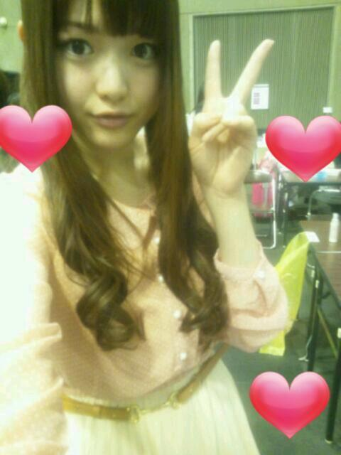
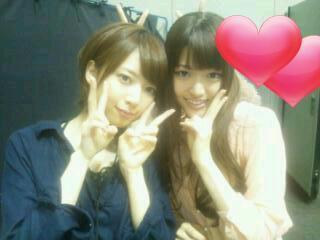

2012/0325Sun初の個別(o・・o)
こんにちりんごっ(o・・o)
さゆりんごっ(o・・o)
やっほー＼(^_^)(^_^)／
昨日は名古屋で
個別握手会が
ありました〜o(*⌒―⌒*)o
個別って初めてやから
どんなんかな〜って
ちょっと不安やったけど
全国握手会とは
また違った感じで
でら楽しかったよ〜ヘ(≧▽≦ヘ)♪
名古屋で初めましての方も
全国から来てくださったかたも
ほんまにありがとうございました！
おかげでさゆりん
いっぱい元気もらえました〜(*´ー｀*)☆
うちもな
皆さんに幸せあげれたかな〜？
あんね〜
他のレーンからでできたファンのかたが
ちらっと見えるんやけど
みなさんほっこりした
いい顔してたから
メンバーの子から
幸せもらったんやな〜って
思ってたんよ〜(*´ー｀*)
そしたらな〜
休憩で裏に戻ったら
メンバーもみんな
ほっこりしたいい顔しててん〜(*^^*)
うちらも皆さんから
いっぱい幸せ貰ってるんやな〜って
改めて思ったよ〜(*´ー｀*)☆
握手会ってええもんやね〜(*^^*)♪
大好き〜o(*⌒―⌒*)o♪
昨日はね、
いっぱい色んなお話できたよー＊
ほんでね〜
さゆりん初名古屋ってことで
かえりに味噌かつの
お弁当食べました〜(*^^*)
でらおいしいっ！
美味しすぎて
びっくりんごやったよ〜(*´ー｀*)
また名古屋に
ゆっくり来たいな〜と
思ったのでした〜(*^^*)
来週は
東京で個別、
そのつぎは
名古屋で全国握手会やから
いまから楽しみー|:3ミ
ほなら、今日もお仕事
頑張るのでありますー＼(^_^)(^_^)／
みなさんも
今日を楽しんでくださいっ☆
したっけね〜っ(o・・o)/♪
さゆりんごでしたっ(o・・o)/

後ろかられなりんが
ピースしてんよ〜(*´ー｀*)↓

2012/03/25 13:06
コメント(378)
さゆりんごっ！
お弁当いっぱい食べたんだってね(笑)
良かったねー！！
ゆったんに書かれてたよ(｀･ω･´)
それにしてもさゆりんの私服かわいーっ！！
もっと私服みたーい(*^^*)
じゃあまたね！
ばいばいりんご、さゆりんごっヽ(^0^)ﾉ
ゆいつん
お弁当いっぱい食べたんだってね(笑)
良かったねー！！
ゆったんに書かれてたよ(｀･ω･´)
それにしてもさゆりんの私服かわいーっ！！
もっと私服みたーい(*^^*)
じゃあまたね！
ばいばいりんご、さゆりんごっヽ(^0^)ﾉ
ゆいつん
お疲れ様(^_^)
さゆりんご、可愛いです(>_<)
さゆりんご、可愛いです(>_<)
さゆりんご殿( ´･ω･`)_且~~ ｲｶｶﾞ?
おはラッキー☆名古屋での個別握手会ングお疲れ様でした。ふぁむ様といっぺ握手できてウレシャスですたね。私服きゃわたんでやんすね!!!握手会～今年中には行きまふｗｗ
(σ￣∇￣)σ【OK牧場♪】
おはラッキー☆名古屋での個別握手会ングお疲れ様でした。ふぁむ様といっぺ握手できてウレシャスですたね。私服きゃわたんでやんすね!!!握手会～今年中には行きまふｗｗ
(σ￣∇￣)σ【OK牧場♪】
さゆりん！
握手会お疲れ(^-^*)/
俺はいけんかった(T0T)
いつか会いたいよ&iF9AF;
これからも
頑張ってな(^O^)
握手会お疲れ(^-^*)/
俺はいけんかった(T0T)
いつか会いたいよ&iF9AF;
これからも
頑張ってな(^O^)
来週東京行くよ~と言いたいけどさゆりんは全部外れてしまった泣いつになったらさゆりんに会えるの
お疲れ様です！
味噌いいですねー。
うらやましいですヘ(≧▽≦ヘ)♪
味噌いいですねー。
うらやましいですヘ(≧▽≦ヘ)♪
さゆりんきてあ！
さゆりんななみん最高
さゆりんななみん最高
さゆりんこんにちはヽ(´▽`)/
個別握手会行きたかったm(__)m
大丈夫ですよ、さゆりんはみんなに幸せを与えてますよ(´∀｀)
今回の個別握手会は行けないけど、次回は行きます
応援してます頑張ってください(*^□^*)
個別握手会行きたかったm(__)m
大丈夫ですよ、さゆりんはみんなに幸せを与えてますよ(´∀｀)
今回の個別握手会は行けないけど、次回は行きます
応援してます頑張ってください(*^□^*)
さゆりんごーー!! こんにちりんご(^-^)v
私服めっちゃ可愛い(>_<)
個別ええなぁ!! 今度の東京全握で慣れたら絶対いくから(^-^)/~~
そういえば、味噌カツまいやんの残りまで食べたんだってね(^-^)笑 ゆったんのブログに書いてあったぞーー!! さゆりんは大食いだね(^o^)
それでは、お仕事頑張って!!
dai
私服めっちゃ可愛い(>_<)
個別ええなぁ!! 今度の東京全握で慣れたら絶対いくから(^-^)/~~
そういえば、味噌カツまいやんの残りまで食べたんだってね(^-^)笑 ゆったんのブログに書いてあったぞーー!! さゆりんは大食いだね(^o^)
それでは、お仕事頑張って!!
dai
さゆりんの私服可愛いS(o・・o)ﾉ
握手会楽しみにしてます！
頑張ってください
握手会楽しみにしてます！
頑張ってください
昨日はお疲れ様！
やっとイベントに参加できて結構ゆっくり話せたし、元気もらってレーンから出たあともほっこりしてました(笑)
次は大阪だけど、自身初の全握が翌日にあるから今からめっちゃ楽しみ(o>ω<o)
多分目立つ格好でのぎうた全力で踊るから、最高のパフォーマンスを期待してます(*´∀｀*)
やっとイベントに参加できて結構ゆっくり話せたし、元気もらってレーンから出たあともほっこりしてました(笑)
次は大阪だけど、自身初の全握が翌日にあるから今からめっちゃ楽しみ(o>ω<o)
多分目立つ格好でのぎうた全力で踊るから、最高のパフォーマンスを期待してます(*´∀｀*)
名古屋行けなかったー
個別デビューはお預けです（−＿−；）
でもいつかは行きたいと思ってるんで、そのときはよろしく！！
あと2ndシングル楽しみにしてるよ〜！
個別デビューはお預けです（−＿−；）
でもいつかは行きたいと思ってるんで、そのときはよろしく！！
あと2ndシングル楽しみにしてるよ〜！
さゆりん昨日はお疲れ様ー♪
さゆりんから昨日元気を
もらえたのでまた1週間頑張れるよ(^-^)/
来週の東京個別で会えるの楽しみにしてるね！
さゆりんから昨日元気を
もらえたのでまた1週間頑張れるよ(^-^)/
来週の東京個別で会えるの楽しみにしてるね！
名古屋行きたかったなー(￣0￣)
僕もほっこりしたいよー
東京で待ってまーす(｀･ω･´)
お仕事頑張ってください
僕もほっこりしたいよー
東京で待ってまーす(｀･ω･´)
お仕事頑張ってください
こんにちわー(￣▽￣;)
さゆりんから元気もらえた人がうらやましいな(+_+)
俺、次の東京も名古屋の全握もいけないんだよなー(~o~)
セカンドシングルん時はマジで何らかの形で会いに行くからねー(T_T)
さゆりんごとお話したいっす(*^^*)
ってか、生でさゆりんの私服見たかったー(゜□゜)
写メのせてくれたから見れて良かった♪♪
ありがとうね(*^^*)
これからも忙しいかもしれないけど、頑張ってね♪
体に気をつけて＼(^o^)／
これからも更新楽しみに待ってまーす♪♪♪♪♪
さゆりんから元気もらえた人がうらやましいな(+_+)
俺、次の東京も名古屋の全握もいけないんだよなー(~o~)
セカンドシングルん時はマジで何らかの形で会いに行くからねー(T_T)
さゆりんごとお話したいっす(*^^*)
ってか、生でさゆりんの私服見たかったー(゜□゜)
写メのせてくれたから見れて良かった♪♪
ありがとうね(*^^*)
これからも忙しいかもしれないけど、頑張ってね♪
体に気をつけて＼(^o^)／
これからも更新楽しみに待ってまーす♪♪♪♪♪
昨日行けなかったけど、東京の個別行くよー
超楽しみやー
待っててねー
超楽しみやー
待っててねー
さゆりん こんにちは。(*＾ω＾*）/
こんにちは。(*＾ω＾*）/
名古屋での個別握手会お疲れ様です
充実した楽しい１日を過ごせたみたいで良かったね。o(≧∇≦)o
ブログの写真の私服カワイイね。
東京での握手会(3/31)には参加予定なので、今から楽しみにしています♪
あと、2ndシングルの発売も待ち遠しいなぁ～ 。o(^▽^o)
いろいろ情報が解禁されるのを待ってまーす。
ではでは、またね。
名古屋での個別握手会お疲れ様です
充実した楽しい１日を過ごせたみたいで良かったね。o(≧∇≦)o
ブログの写真の私服カワイイね。
東京での握手会(3/31)には参加予定なので、今から楽しみにしています♪
あと、2ndシングルの発売も待ち遠しいなぁ～ 。o(^▽^o)
いろいろ情報が解禁されるのを待ってまーす。
ではでは、またね。
おはこんばんちは
昨日は長時間の握手会お疲れ様でした。
初めての個別握手会楽しかったみたいで良かったです。
僕は大阪での個別握手会でさゆりんに会えるのを楽しみに待ってます！まぁ、実は昨日も名古屋に行っててさゆりんと目が合ったんだけどね(笑)
それ蛇∫~～
昨日は長時間の握手会お疲れ様でした。
初めての個別握手会楽しかったみたいで良かったです。
僕は大阪での個別握手会でさゆりんに会えるのを楽しみに待ってます！まぁ、実は昨日も名古屋に行っててさゆりんと目が合ったんだけどね(笑)
それ蛇∫~～
ヤッホーおおきにー☆
更新待っとったんやでー！
航平やで♪
(もうフルネームめんどくさいから
「航平」だけ覚えてくれや…)
てか俺、
七瀬ちゃんにもそうやねんけど、
関西出身のメンバーには
関西弁でコメントしとんねや！
そやから関西弁コメント見たら
「あっ、航平や！」
って気付くやろ？
とゆーわけで今度から
関西弁コメント見たら
すぐ俺だって
気付いてくれや(o^∀^o)
んで、話変わるで！
握手会お疲れ様☆
正直名古屋まで追っ掛けてでも
さゆりんごに
会いに行きたかったんや！
でも俺な、
20日からずっと
出身地である新潟で
お仕事しとんねん……
そやから会いに行けへんくて
ホンマに寂しいんや…(゜ーÅ)
てなわけで、
いつかさゆりんごに
直接会ったらな、
「大好きやでー！！」
って思いっ切り
叫んだるわ(笑)
さゆりんごも俺に会えるのを
楽しみにしとってな！
ほんじゃ、今日も頑張れやー☆
d(@^∇゜)/♪
・・・ななみんにツノ……
思わず笑ってもうたわ(笑)
れなりんの可愛さは
ホンマにあなどれなりーん！！
(↑「侮れない」を
かけとんのや(≧∇≦))
更新待っとったんやでー！
航平やで♪
(もうフルネームめんどくさいから
「航平」だけ覚えてくれや…)
てか俺、
七瀬ちゃんにもそうやねんけど、
関西出身のメンバーには
関西弁でコメントしとんねや！
そやから関西弁コメント見たら
「あっ、航平や！」
って気付くやろ？
とゆーわけで今度から
関西弁コメント見たら
すぐ俺だって
気付いてくれや(o^∀^o)
んで、話変わるで！
握手会お疲れ様☆
正直名古屋まで追っ掛けてでも
さゆりんごに
会いに行きたかったんや！
でも俺な、
20日からずっと
出身地である新潟で
お仕事しとんねん……
そやから会いに行けへんくて
ホンマに寂しいんや…(゜ーÅ)
てなわけで、
いつかさゆりんごに
直接会ったらな、
「大好きやでー！！」
って思いっ切り
叫んだるわ(笑)
さゆりんごも俺に会えるのを
楽しみにしとってな！
ほんじゃ、今日も頑張れやー☆
d(@^∇゜)/♪
・・・ななみんにツノ……
思わず笑ってもうたわ(笑)
れなりんの可愛さは
ホンマにあなどれなりーん！！
(↑「侮れない」を
かけとんのや(≧∇≦))
こんにちは！
握手会お疲れ様でした♪
自分もさゆりんと握手してほっこりしたいです(^w^)
お仕事頑張ってください(^^)
握手会お疲れ様でした♪
自分もさゆりんと握手してほっこりしたいです(^w^)
お仕事頑張ってください(^^)
こんにちは
名古屋の個別お疲れっす
全国握手会にわたくしもさゆりんごTシャツ着て行きたいと思います。
早く超絶可愛いさゆりんごに会いたくて胸がいっぱいやねん＼(^_^)／
名古屋の個別お疲れっす
全国握手会にわたくしもさゆりんごTシャツ着て行きたいと思います。
早く超絶可愛いさゆりんごに会いたくて胸がいっぱいやねん＼(^_^)／
さゆりんご昨日ぶりでし☆
昨日はほんま楽しかったよお(>ωωω∀<*)ノ
昨日はほんま楽しかったよお(>ωωω∀<*)ノ
昨日はありがとう♪
さゆりんから沢山元気もらいました(≧∀≦)
東京もよろしくお願いします。。
お仕事頑張って！
さゆりんから沢山元気もらいました(≧∀≦)
東京もよろしくお願いします。。
お仕事頑張って！
今回の個別には行けなかった…(>_<)
さゆりんの私服、可愛い♪
握手会には行けなかったけど、いつも、さゆりんから幸せもらってるよ!!
2ndシングルの個別には行く予定だから、楽しみ♪
さゆりん、一度で良いから仙台に来て(笑)
さゆりんの私服、可愛い♪
握手会には行けなかったけど、いつも、さゆりんから幸せもらってるよ!!
2ndシングルの個別には行く予定だから、楽しみ♪
さゆりん、一度で良いから仙台に来て(笑)
さゆりーん‼
昨日赤い着ぐるみ着とったやつやけどわかる⁇
変な格好でごめんね（笑）
つか生さゆりん可愛いかった‼
可愛いすぎてびっくりしたわ‼
あとぴょんぴょん飛び跳ねてて可愛いし
なかなか手離してくれんくて嬉しかったし
ウィンク可愛いすぎやし
惚れてまうやろー（笑）
つかもう好きなんやけどね\(//∇//)\
昨日一日ほんとありがとうね‼
セカンドでもさゆりんの輝いとる姿みせてね
いつも応援しとるからね‼
昨日赤い着ぐるみ着とったやつやけどわかる⁇
変な格好でごめんね（笑）
つか生さゆりん可愛いかった‼
可愛いすぎてびっくりしたわ‼
あとぴょんぴょん飛び跳ねてて可愛いし
なかなか手離してくれんくて嬉しかったし
ウィンク可愛いすぎやし
惚れてまうやろー（笑）
つかもう好きなんやけどね\(//∇//)\
昨日一日ほんとありがとうね‼
セカンドでもさゆりんの輝いとる姿みせてね
いつも応援しとるからね‼
初コメです(^-^)
握手会行きたかった(T_T)
いつか握手会行きたいと思います(*^-^)ノ
それではお仕事頑張って下さい(≧∀≦)
握手会行きたかった(T_T)
いつか握手会行きたいと思います(*^-^)ノ
それではお仕事頑張って下さい(≧∀≦)
さゆりんご！
こんばんは！？
おはようカナ？
昨日はお疲れ様!!
質問です！
①実はかなりん推しなんですけど、さゆりんご推しの友人のレポとか見てて行きたくなりましたー(^-^)/
2ndで握手行ってもい～い？
②その時にいきなりさゆりんごパンチもらってもい～い？
もしかしたらその一撃で推し変ry…かもしれない
じゃあそんな感じで！
ばーい♪( ´▽｀)
こんばんは！？
おはようカナ？
昨日はお疲れ様!!
質問です！
①実はかなりん推しなんですけど、さゆりんご推しの友人のレポとか見てて行きたくなりましたー(^-^)/
2ndで握手行ってもい～い？
②その時にいきなりさゆりんごパンチもらってもい～い？
もしかしたらその一撃で推し変ry…かもしれない
じゃあそんな感じで！
ばーい♪( ´▽｀)
高校野球観てるなう！
高２のしょーごです(^-^)／
個別握手会お疲れ様！
楽しめて良かったね(^O^)
東京の個別は
都合悪くて行けないけど
2ndシングルはたくさん
さゆりんに会いに行くね♪
午後も頑張りましょう！
高２のしょーごです(^-^)／
個別握手会お疲れ様！
楽しめて良かったね(^O^)
東京の個別は
都合悪くて行けないけど
2ndシングルはたくさん
さゆりんに会いに行くね♪
午後も頑張りましょう！
お疲れ様です(^-^)
握手会お疲れ様でした♪ヽ(´▽｀)/
俺も早く行きたいわ(涙)
この春から大学生だから、握手会参加したいです。
待っててくださいね(*´∇｀*)
俺も早く行きたいわ(涙)
この春から大学生だから、握手会参加したいです。
待っててくださいね(*´∇｀*)
さゆりんご～
個別握手会お疲れ様～＼(^o^)／
まださゆりんとは握手してないけど
いつもさゆりんから幸せをいただいてますよ
握手したらこれ以上ない幸せが待ってるんやろな～
だからいつか福岡にも来てねっ＼(^o^)／
ホントに福岡でイベントあってほしいわ～！笑
いつかさゆりんに会える日を楽しみにしてます
ほなねっ
さゆりん、こんにちりんご～！
(*^-^)ノ
エエなぁ、エエなぁ！
さゆりんのブログからも楽しいオーラが湧き出とるなぁ♪
そんなブログを見てnynyしてるのは内緒←キモくてゴメンな(笑)
あぁ！俺も行きたかった！
みんなの楽しそうなブログ見てるのは目の毒や！(笑)
いつか絶対行ったるからなぁ！
ε=ε=(ノ≧∇≦）ノ
(*^-^)ノ
エエなぁ、エエなぁ！
さゆりんのブログからも楽しいオーラが湧き出とるなぁ♪
そんなブログを見てnynyしてるのは内緒←キモくてゴメンな(笑)
あぁ！俺も行きたかった！
みんなの楽しそうなブログ見てるのは目の毒や！(笑)
いつか絶対行ったるからなぁ！
ε=ε=(ノ≧∇≦）ノ
個別お疲れ様?(><)
初の個別いっぱいおしゃべり出来てでら楽しかったよ&sF9CE;
さゆりんご姫にも元気を与えられたみたいで良かった(^ω^)
握手会中のハイテンションなさゆりんご姫を見て
さゆりんご姫が握手会大好きなのは充分伝わったよ&sF9CE;&sF9CE;
このあとも３週連続で会えるから楽しみ(^q^)
お仕事→移動とかで大変だけど頑張ってね&sF9C6;&sF9C6;
初の個別いっぱいおしゃべり出来てでら楽しかったよ&sF9CE;
さゆりんご姫にも元気を与えられたみたいで良かった(^ω^)
握手会中のハイテンションなさゆりんご姫を見て
さゆりんご姫が握手会大好きなのは充分伝わったよ&sF9CE;&sF9CE;
このあとも３週連続で会えるから楽しみ(^q^)
お仕事→移動とかで大変だけど頑張ってね&sF9C6;&sF9C6;
個別参加したよー( ￣▽￣)
めっちゃ楽しかったし元気もらえた！
さいたまから行った甲斐があったわ～
さいたま住みなのに今回の東京の個別には参加できないとゆーね(・_・;
ショックやー
さゆりんお疲れ様！仕事頑張って！
めっちゃ楽しかったし元気もらえた！
さいたまから行った甲斐があったわ～
さいたま住みなのに今回の東京の個別には参加できないとゆーね(・_・;
ショックやー
さゆりんお疲れ様！仕事頑張って！
おつりんご＼(^o^)／
「したっけねー」を使ってくれてるー(>_<)
どんどん北海道弁を流行らせてｗｗ
昨日はお疲れ様でした！
久々にさゆりんに会えてなまら楽しかったあ！！
元気あげられたかな。
俺は元気なまらもらったよー('∀'●)
これでしばらくは仕事も頑張れる！！
でももうすでに、
はやくさゆりんに会いたくなってるｗｗ
今、4月7日の全国握手会も会いに行こうか考えてるよー。
さゆりん中毒だｗｗ
握手会で「謝って」って言われて「ごめんなさい」したの初めてだったよｗｗ
まあ、浮気した俺が悪かったけどｗｗ
けど今度からはさゆりんしかー！！
あ、ちなみに俺は握手し終わったあとのニヤニヤ顔をスタッフに見られて恥ずかしいからすぐ真面目な顔に戻すｗｗ
名古屋名物食べることできてよかったじゃん！
昼飯はチキンのトマトのなんとかって言ってたからｗｗ
じゃあ、今日も仕事みたいで疲れてると思うけど、
体調には気をつけて頑張ってね。
したっけ、じゃーにー(-゜3゜)ノシ
「したっけねー」を使ってくれてるー(>_<)
どんどん北海道弁を流行らせてｗｗ
昨日はお疲れ様でした！
久々にさゆりんに会えてなまら楽しかったあ！！
元気あげられたかな。
俺は元気なまらもらったよー('∀'●)
これでしばらくは仕事も頑張れる！！
でももうすでに、
はやくさゆりんに会いたくなってるｗｗ
今、4月7日の全国握手会も会いに行こうか考えてるよー。
さゆりん中毒だｗｗ
握手会で「謝って」って言われて「ごめんなさい」したの初めてだったよｗｗ
まあ、浮気した俺が悪かったけどｗｗ
けど今度からはさゆりんしかー！！
あ、ちなみに俺は握手し終わったあとのニヤニヤ顔をスタッフに見られて恥ずかしいからすぐ真面目な顔に戻すｗｗ
名古屋名物食べることできてよかったじゃん！
昼飯はチキンのトマトのなんとかって言ってたからｗｗ
じゃあ、今日も仕事みたいで疲れてると思うけど、
体調には気をつけて頑張ってね。
したっけ、じゃーにー(-゜3゜)ノシ
＊**＊**＊**＊**＊**＊**＊**＊**＊**＊
こんにちりんご(o・・o)/
昨日は名古屋個別握手会
お疲れ様でした＼(^o^)／
せっかくの地元での握手会だったのに
行けなくて残念でした
次のシングルの名古屋個別握手会は
行くので楽しみにしてます＊*
さゆりんの私服めちゃくちゃ
可愛いですね
＊**＊**＊**＊**＊**＊**＊**＊**＊**＊
こんにちりんご(o・・o)/
昨日は名古屋個別握手会
お疲れ様でした＼(^o^)／
せっかくの地元での握手会だったのに
行けなくて残念でした
次のシングルの名古屋個別握手会は
行くので楽しみにしてます＊*
さゆりんの私服めちゃくちゃ
可愛いですね
＊**＊**＊**＊**＊**＊**＊**＊**＊**＊
昨日は楽しかった。
さゆりんごパワーの充電出来たし、また１週間頑張れそうです(笑)
残りの握手会でもよろしく。
ほなら、後追って関東へ戻りますわ。
さゆりんごパワーの充電出来たし、また１週間頑張れそうです(笑)
残りの握手会でもよろしく。
ほなら、後追って関東へ戻りますわ。
ども♪
昨日はお疲れ様
凄ーく充実して大満足な握手会だったみたいだねー。
あっ‥
シメの言葉が北海道言葉!わあ‥。
高まったーっ。 笑笑っ
昨日はお疲れ様
凄ーく充実して大満足な握手会だったみたいだねー。
あっ‥
シメの言葉が北海道言葉!わあ‥。
高まったーっ。 笑笑っ
名古屋個別お疲れちゃんでした！
行きたかったなぁ(泣)
そうなんだよねぇ…
握手会て一瞬なのに…
とても温かい気持ちで胸一杯になれるんだよね…
自分は人生初の握手会が群馬での全国握手会だったんだけど
その時、生まれて初めて握手したアイドルが…
さゆりんだったんです！
それ以来なにか、シンドイ事があった時は、さゆりんの個人PVを見るようになりました。
とても幸せな気持ちになって救われるんです！
いつか個別を当てて、さゆりんに！
お礼を言いに行くねっ！
行きたかったなぁ(泣)
そうなんだよねぇ…
握手会て一瞬なのに…
とても温かい気持ちで胸一杯になれるんだよね…
自分は人生初の握手会が群馬での全国握手会だったんだけど
その時、生まれて初めて握手したアイドルが…
さゆりんだったんです！
それ以来なにか、シンドイ事があった時は、さゆりんの個人PVを見るようになりました。
とても幸せな気持ちになって救われるんです！
いつか個別を当てて、さゆりんに！
お礼を言いに行くねっ！
したっけね～＼(^o^)／
北海道やあ(笑)
さゆりんのこと、昨日、ななみんのレーンから←見たけど可愛かった//
次はさゆりん行くね！
なまら楽しみ\(//∇//)\
北海道やあ(笑)
さゆりんのこと、昨日、ななみんのレーンから←見たけど可愛かった//
次はさゆりん行くね！
なまら楽しみ\(//∇//)\
おっとーこれって来ましたか～なんか意外（笑）に大人びた感じなんでやんすな～～
可愛いだがや～～！(＾＾)！(＃^.^＃)なるほろ～そっただ構成になってるんでやんすね～
なるほろ～舞台裏もなにげにさゆりんごらしい穏やかな文法でしゅな～(゜▽゜)！(＾＾)！
にしてもやっほーってこりゃまた可愛いですのぉ～斎藤ちゃんのblogにもありましたが
またもや隠れ大食漢ぶりを発揮されたようで、相変わらずですにゃ～とほほえましかった
だがや～～ん。そーきゃあ、OAでも唐突に絡むだけはある仲って推理できる画どすな～～
(＃^.^＃)！(＾＾)！
そうそう最近読みだした『スープカレー』(監修・秦建日子)が何気に面白いです
映像化も同時進行でメガホンとったのがあの本広監督なんですね～！(＾＾)！(＃^.^＃)
踊る大捜査線の監督といえばおわかり頂けるかと思います( ^^)Y☆Y(^^ )！(＾＾)！
ちなみに北海道から先行OAなんだそうでo(^-^o)(o^-^)o！(＾＾)！。
そーいやいつの間にやらもうPVは撮り終わってるそーですね。はやって思いましたえ～(゜▽゜)
可愛いだがや～～！(＾＾)！(＃^.^＃)なるほろ～そっただ構成になってるんでやんすね～
なるほろ～舞台裏もなにげにさゆりんごらしい穏やかな文法でしゅな～(゜▽゜)！(＾＾)！
にしてもやっほーってこりゃまた可愛いですのぉ～斎藤ちゃんのblogにもありましたが
またもや隠れ大食漢ぶりを発揮されたようで、相変わらずですにゃ～とほほえましかった
だがや～～ん。そーきゃあ、OAでも唐突に絡むだけはある仲って推理できる画どすな～～
(＃^.^＃)！(＾＾)！
そうそう最近読みだした『スープカレー』(監修・秦建日子)が何気に面白いです
映像化も同時進行でメガホンとったのがあの本広監督なんですね～！(＾＾)！(＃^.^＃)
踊る大捜査線の監督といえばおわかり頂けるかと思います( ^^)Y☆Y(^^ )！(＾＾)！
ちなみに北海道から先行OAなんだそうでo(^-^o)(o^-^)o！(＾＾)！。
そーいやいつの間にやらもうPVは撮り終わってるそーですね。はやって思いましたえ～(゜▽゜)
こんにちりんご(^◇^)┛昨日の個別握手会IN名古屋お疲れ様！
初の個別握手会だけどいい経験になったから東京や大阪の向けていいと思います。
３１日さゆりんに会いに行くからね(*^o^*)
初の個別握手会だけどいい経験になったから東京や大阪の向けていいと思います。
３１日さゆりんに会いに行くからね(*^o^*)
ファンの自分が言うのもなんだけど、
メンバーも個別握手会を楽しめて、本当に良かった
メンバーも個別握手会を楽しめて、本当に良かった
31日ほっこりしたいなー
(●^ー^●)
でも、あまりほっこりした顔見られたくないなー。
恥ずかし(//∀//)
ということで
31日楽しみにしています。
(●^ー^●)
でも、あまりほっこりした顔見られたくないなー。
恥ずかし(//∀//)
ということで
31日楽しみにしています。
名古屋での個握、お疲れさま(*^^*)
31日の東京は自分も行くから、めっちゃ楽しみです♪
お仕事、がんばってね！
31日の東京は自分も行くから、めっちゃ楽しみです♪
お仕事、がんばってね！
こんにちは
握手会お疲れ様
多分ハードスケジュールで忙しいと思うけどがんばってね
来週まで待ちきれんよ
さゆりんごパワー不足してる
あと次の2ndシングルの個別当たりましたよ
握手会お疲れ様
多分ハードスケジュールで忙しいと思うけどがんばってね
来週まで待ちきれんよ
さゆりんごパワー不足してる
あと次の2ndシングルの個別当たりましたよ
さゆりんりーん♪
さゆりん
おっす(^∀^)ノ
握手会お疲れ(゜▽゜)/
個別握手会は、
ゆっくり話せるよな(｀∇´ゞ
ま、
握手会は、楽しいな♪
名古屋は、行けんかったけど、来週の東京は行くでーo(｀▽´)o
今から、
楽しみすぎて、夜も寝れへんｗｗ＼(☆o☆)／
やっと、
さゆりんに会えるぅぅぅぅふーーー(＞Σ＜)
出た!!「でら」ｗｗ
よー聞くわぁ(￣∀￣)
あー
さゆりんカワイー(o^∀^o)
ほんじゃあ
仕事がんばっちょ♪?θ(^0^ )
ゆうきちヾ(ヘε ヘ”)
さゆりん
おっす(^∀^)ノ
握手会お疲れ(゜▽゜)/
個別握手会は、
ゆっくり話せるよな(｀∇´ゞ
ま、
握手会は、楽しいな♪
名古屋は、行けんかったけど、来週の東京は行くでーo(｀▽´)o
今から、
楽しみすぎて、夜も寝れへんｗｗ＼(☆o☆)／
やっと、
さゆりんに会えるぅぅぅぅふーーー(＞Σ＜)
出た!!「でら」ｗｗ
よー聞くわぁ(￣∀￣)
あー
さゆりんカワイー(o^∀^o)
ほんじゃあ
仕事がんばっちょ♪?θ(^0^ )
ゆうきちヾ(ヘε ヘ”)
昨日は本当にありがとう(≧∀≦)
名古屋自体行くの初めてだったし
それがアイドルとの握手会ってゆうあれだったけど
握手も楽しかったし夜手羽先やらみそかつやら食べて名古屋満喫できたよ♪(^O^)
まあ普通に観光でもいきたいね!
ほんっと緊張すると噛むし握手会で話すの苦手な自分だけど
さゆりんとはそれでも楽しめちゃう(*´｀)幸せな一時でした
ちゃんとわかってもらえてて安心したし(´；ω；｀)笑
また来週会えるの楽しみにしてるよっ!(o・・o)
名古屋自体行くの初めてだったし
それがアイドルとの握手会ってゆうあれだったけど
握手も楽しかったし夜手羽先やらみそかつやら食べて名古屋満喫できたよ♪(^O^)
まあ普通に観光でもいきたいね!
ほんっと緊張すると噛むし握手会で話すの苦手な自分だけど
さゆりんとはそれでも楽しめちゃう(*´｀)幸せな一時でした
ちゃんとわかってもらえてて安心したし(´；ω；｀)笑
また来週会えるの楽しみにしてるよっ!(o・・o)
昨日はありがとう
東京もよろしく
東京もよろしく


さゆりん本間
ええこと言うな(;_;)
昨日さゆりん
行ってめちゃ癒された!
関西弁最高(=゜ω゜)ノ
次全握行くね!!
ひろろんとか友達と
連番するんでよろしく!